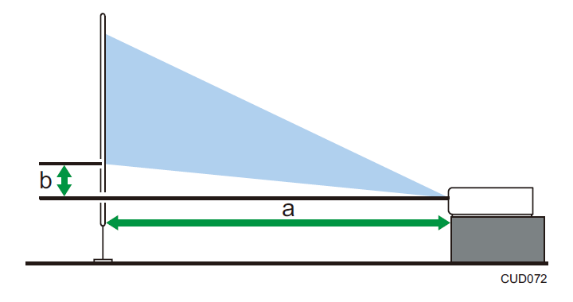

投影距离与屏幕尺寸之间的关系¶
投影图像的尺寸取决于投影仪离屏幕的距离。
请参考以下表格，将投影仪放置在合适的位置。
表中提供的投影尺寸适用于未进行梯形校正调整的全尺寸图像。
当缩放杆位于宽侧的末端时，投影距离变得最短，而当缩放杆位于长焦侧的末端时，投影距离变得最长。

| 投影尺寸 | 投影距离 | 投影高度 | |
|---|---|---|---|
| 最短 | 最长 | ||
| 30 英寸 | 0.68 米（2.22 英尺） | 1.05 米（3.45 英尺） | 4 厘米（1 英寸） |
| 40 英寸 | 0.92 米（3.02 英尺） | 1.41 米（4.64 英尺） | 5 厘米（2 英寸） |
| 60 英寸 | 1.40 米（4.58 英尺） | 2.13 米（6.99 英尺） | 7 厘米（3 英寸） |
| 100 英寸 | 2.34 米（7.68 英尺） | 3.58 米（11.75 英尺） | 12 厘米（5 英寸） |
| 150 英寸 | 3.54 米（11.60 英尺） | 5.39 米（17.67 英尺） | 18 厘米（7 英寸） |
| 200 英寸 | 4.73 米（15.50 英尺） | 7.20 米（23.61 英尺） | 24 厘米（9 英寸） |